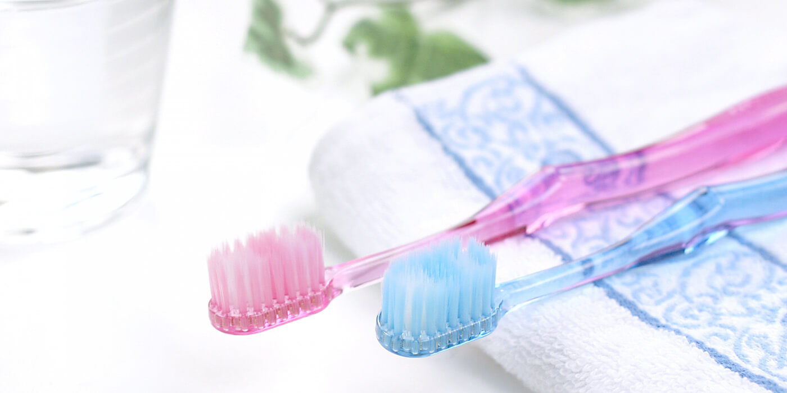

歯周病治療PERIO

歯周病は、歯周炎と歯肉炎の2つに大別できます。大まかに言うと歯周病は、歯茎（歯周ポケット）内にいる歯石の菌が骨を溶かす毒素をだして多少なりとも骨が溶け始めている状態のことです。
歯肉炎は、歯肉（＝歯茎）のみの炎症のことで、歯周炎は歯茎だけではなく、骨や歯の周囲の粘膜に炎症が広がった状態です。
歯周病について
歯周病と歯槽膿漏の違い
歯槽膿漏は歯科としては学術的な用語ではありませんのであまり使いませんが、歯周炎によって膿が貯まってしまった場合、患者様に説明しやすくするためこの用語を用いることもあります。
歯周病になる原因
ブラッシング不良による、汚れが歯石の沈着を引き起こし歯石内の菌により歯肉、歯周組織の炎症が起こります。
歯そのものが綺麗に磨かれていたり、虫歯が無かったとしても歯と歯ぐきの溝のブラッシングが届いてないと発生し、最悪、動揺を引き起こし抜けてしまう事もあります。
歯周病と全身疾患の
関係性について
全身の免疫低下や高血圧、糖尿病など血管の病気、それに対してのお薬の作用が影響し、ただブラッシング不良で引き起こされる歯周病よりも症状が強く治りにくいこともあります。また、歯周病や口腔清掃状況の不良により風邪やインフルエンザにかかりやすくなったりもしますので相互関係はあると考えられています。
歯周病と口臭の
関係性について
歯周病を引き起こす菌の中には口臭の原因となるものもいますし、歯と歯の間はフロスや歯間ブラシを小まめに通さないと臭いを発生させる菌や、血液、食べカスが停滞しやすくなります。
健康な歯茎の見分け方
歯周ポケットで言うと３mm以内。肉眼で見てもピンク色を帯びていて、歯と歯ぐきの境目がくっきりしている歯ぐきであれば概ね健康と言えます。
逆に、揺れて今にも抜けそうな場合は抜歯をした方が良い可能性があります。その場合はご相談ください。最適な治療を皆様が受けれるように診査診断を行い、今後の治療計画を綿密に立てていきましょう。
歯周病の進行段階
軽度歯周病
| 特徴 | 歯周ポケット3mm以内 骨の吸収もレントゲンで若干確認できる程度 |
|---|---|
| 治療内容 | 通常のスケーリングとブラッシング指導 |
中等度歯周病
| 特徴 | 歯周ポケット4mm～6mm レントゲンで明らかに骨が吸収しているのが認められる |
|---|---|
| 治療内容 | スケーリングと深い歯石取り（SRP）が必要になる |
重度歯周病
| 特徴 | 歯周ポケット6mm以上 レントゲンでの骨が吸収が重度で動揺が認められる |
|---|---|
| 治療内容 | 部分的にポケットが極端に深く、骨がある程度残っている場合はSRPや歯ぐきを開いた上で根の表面を滑沢にするフラップ手術を行うことがある。また症状が強い場合は抜歯をおすすめすることもある |
歯周病を予防するために
歯科医院で行うこと
ご自身の歯周病検査の結果をしっかりと聞き、ブラッシング指導を受けることが大事です。場合によってはSRPをすすめられることがあると思いますが、断る患者様が非常に多いと感じております。皆さんの歯の健康のためにもドクターとよく相談して決断してください。
自宅で行うこと
時間はかかるかもしれませんが、ブラッシング指導を受けた通りにブラッシングを行ってみて、歯間ブラシやフロスを併用してみると良いと思います
まずはご相談ください
私達は患者様からお口の健康を任せていただけるように、頼りがいのある歯科医院を目指しています。お口のトラブルがございましたら、お気軽にご相談ください。